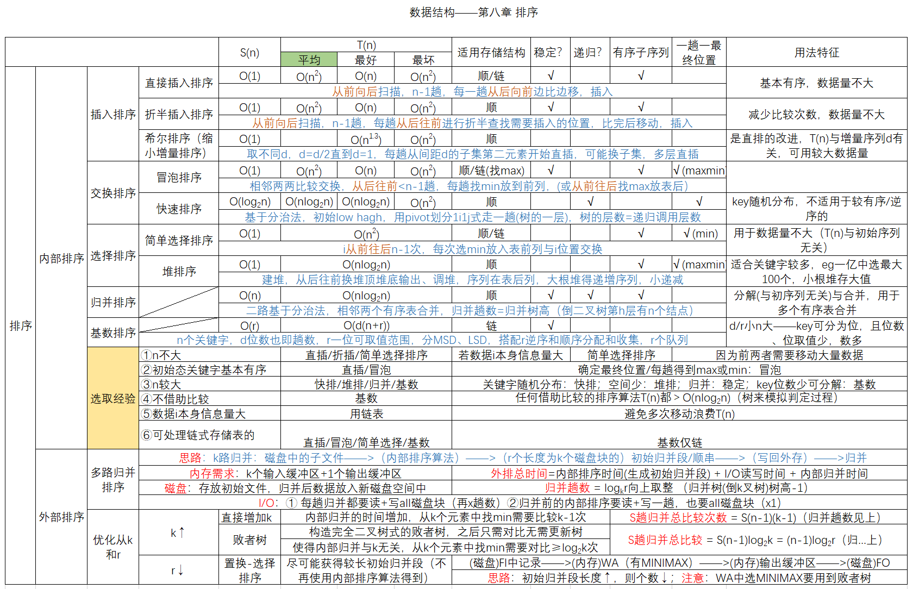

2022.10.26

若要求排序是稳定的，且关键字为实数，则在下列排序方法中应选(） A.直接插入排序 B.选择排序 C.基数排序 D.快速排序
【答案】：A
以下排序方法中时间复杂度为O(nlog2 n）且稳定的是()。 A.堆排序 B.快速排序 C.归并排序 D.直接插入排序
【答案】：C
设被排序的结点序列共有N个结点，在该序列中的结点已十分接近有序的情况下，用直接插入排序、归并排序和快速排序对其进行排序，这些算法的时间复杂度应为（）。 A. O(N), O(N), O(N) B. O(N), O(Nlog2 N), O(Nlog2 N) C. O(N), O(Nlog2 N), O(N^2) D. O(N^2), O(Nlog2 N), O(N^2)
【答案】：C
下列排序算法中属于稳定排序的是（①），平均时间复杂度为O（nlog2 n）的是（②），在最好的情况下，时间复杂度可以达到线性时间的有(③） I.冒泡排序 II.堆排序 III.选择排序 IV.直接插入排序 V.希尔排序 VI.归并排序 VII.快速排序
【答案】：
就排序算法所用的辅助空间而言，堆排序、快速排序和归并排序的关系是( ) A. 堆排序<快速排序<归并排序 B. 堆排序<归并排序<快速排序 C. 堆排序>归并排序>快速排序 D. 堆排序>快速排序>归并排序
【答案】：A
排序趟数与序列的原始状态无关的排序方法是（ ）。 I.直接插入排序 II.简单选择排序 III.冒泡排序 IV.基数排序 A. I、III B. I、II、TV C. I、II、III D. I、IV
【答案】：B
若序列的原始状态为(1,2,3,4,5,10,6,7,8,9)，要想使得排序过程中的元素比较次数最少，则应该来用（ ）方法。 A.插入排序 B.选择排序 C.希尔排序 D.冒泡排序
【答案】：D->A
一般情况下，以下查找效率最低的数据结构是（ ） A.有序顺序表 B.二叉排序树 C.堆 D.平衡二叉树
【答案】：C
排序趟数与序列的原始状态有关的排序方法是（）排序法.
A.插入 B.选择 C.冒泡 D.基数
【答案】：C
【2012 统考真题】在内部排序过程中，对尚未确定最终位置的所有元素进行一遍处理称为一趟排序。下列排序方法中，每趟排序结束都至少能够确定一个元素最终位置的方法是（ ）. I.简单选择排序 II.希尔排序 III. 快速排序 IV. 堆排序 V.2路归并排序 A.仅I、III、IV B.仅I、III、V C.仅I、III、IV D.仅III、IV、V
【答案】：A
【2015 统考真题】下列排序算法中，元素的移动次数与关键宇的初始排列次序无关的是( ). A. 直接插入排序 B. 起泡排序 C. 基数排序 D. 快速排序
【答案】：A->C
【2017 统考真题】下列排序方法中，若将顺序存储更换为链式存储，则算法的时间效率会降低的是（ ）. I.插入排序 II.选择排序 III.起泡排序 IV. 希尔排序 V.堆排序 A. 仅I、II B. 仅II、III C. 仅III、IV D. 仅IV、V
【答案】：C->D
【2019 統考真题】选择一个排序算法时，除算法的时空效率外，下列因素中，还需要考虑的是( ）。 I.数据的规模 II.数据的存储方式 III. 算法的稳定性 IV. 数据的初始状态 A.仅I B.仅I、II C.仅II、III、IV D.I、II、III、IV
【答案】：D
【2020 统考真题】对大部分元素已有序的数组排序时，直接插入排序比简单选择排序效率更高，其原因是（ ） I. 直接插入排序过程中元素之间的比较次数更少 II. 直接插入排序过程中所需的辅助空间更少 III. 直接插入排序过程中元素的移动次数更少 A. 仅I B. 仅III C. 仅I、II D. I、II、III、IV
【答案】：B->A